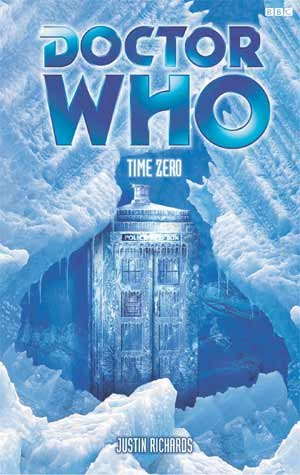

|
Time Zero
|
BASIC PLOT DOCTOR COMPANIONS Pg 230 Future companion Trix (Beatrix MacMillan) appears here for the first time. MATERIALISATION CIRCUIT Pg 27 The Doctor meets Fitz and George in Russia, 1894. Pg 34 The Doctor is in England in 2002, so presumably he took the TARDIS there, rather than hanging around for eighteen months. Pgs 200 and 201 Up on the sled above the ice cavern, Siberia, 2002. Pg 252 Inside the ice cavern. Pg 264 Just outside the castle gates. Pg 270 Earth 1938, in a parallel universe where King Edward never abdicated. PREPARATORY READING CONTINUITY REFERENCES Pg 8 Reference to Dave (Escape Velocity). Pg 12 "But the Fitz written with so neat, almost feminine a hand on the scrap of paper is nothing like the Fitz signed in the journal." The Doctor's note from the Earth Arc was written by Compassion, not Fitz. Pg 28 "'Perhaps there really is a wooly mammoth or whatever frozen there.' 'Ah,' said the Doctor, wagging his index finger, but how many tusks will it really have?' George and Fitz both laughed, recalling the first time they had met." Camera Obscura. Pg 34 "He could see the desk where he had sat for so many hours over the long years. Somewhere in his pocket was his card..." Endgame (page 19). Pg 35 "Just watching, observing, uninvolved. Far better to be out there, doing something, achieving... anything." Reference to the Time Lords and the Doctor's dislike of their ways (The War Games et al). Pg 40 "The first few months of 1963 had been cold, but it had nothing on this." Time and Relative. Pg 41 "I've been to Hope, where the ruler is a mechanical man and the sea is made of acid." Hope. Pg 68 "Perhaps the only work-related disappointment that she had suffered in recent months was that Mitch had moved to a company in Edinburgh." Likely the same Mitch mentioned in The Domino Effect (page 10). Pg 87 "I got rather drenched in Spain, I seem to recall." History 101. Pg 141 "There was also an Anji who had died with Dave" Escape Velocity. Pg 167 "The look on his face made her think for a second that he was going to leap to his feet with a cry of 'Unhand me Madam'" The third Doctor says exactly this when Iris hugs him in Verdigris. Pg 185 "The Doctor sitting on a bed, holding a battered copy of The Age of Reason. 'Is that his writing inside?'" Flashback to History 101. "The note you had wasn't actually written by Fitz, was it?" The Earth arc. Pg 198 "I've had a while to come to terms with it. Since we were in Spain." History 101, when the Doctor finally had proof that the handwriting in the journal was Fitz's (pg 159 of that book). Pg 200 "I've got a friend [...] that the Doctor kept waiting for over a century." The Earth arc. Pg 201 "The TARDIS is itself made of fire. In a sense." The Burning. Pg 223 "I have faced people who became clocks." Anachrophobia. "I've fought against beasts from other dimensions" Likely The Adventuress of Henrietta Street. "I've bargained with fire demons and I've forgotten more than any of you will or can ever know." The Burning, The Ancestor Cell. Pg 231 "Our little chat in Spain, you mean?" History 101. "You get mistletoe at Christmas." Anachrophobia. Pgs 232-233 "I destroyed the time machine that might have done the trick, though I didn't realise you wanted it for yourself back in the nineteenth century." Camera Obscura. Pg 234 "The gun leapt from Sabbath's palm as the shot cracked round the room. He cried out and stared at his bloodied hand. [...] Without a word, the Doctor handed Sabbath a handkerchief." This moment will prove to be pivotal in forthcoming books. See Timeless (pg 8) and Sometime Never... (pg 247). Pg 237 "That's what free will is all about." Given that the Doctor says this in the context of alternate universes, this might be a reference to Inferno. Pg 248 "'In fact, it sounds like the granddaddy of all paradoxes.' He blinked. 'Sorry, forget I said that," he murmured." Reference to Grandfather Paradox, who appeared in The Ancestor Cell. Pg 251 "You wouldn't let me kill Nathaniel Ashe, and he wasn't even an innocent bystander." Camera Obscura (though see Continuity Cock-Ups). Pg 259 "A race against infinity." The Infinity Race. Pg 275 "What's this boat doing here?" The Infinity Race. OLD FRIENDS AND OLD ENEMIES George Williamson appeared in Camera Obscura. Pg 33 Control (seen in The Devil Goblins from Neptune, The King of Terror, Escape Velocity and Trading Futures). Pg 263 The fire creature from The Burning. NEW FRIENDS AND NEW ENEMIES Captain Nesbitt, Corporal Lansing, Beauchamp.
CONTINUITY COCK-UPS PLUGGING THE HOLES [Fan-wank theorizing of how to fix continuity cock-ups] FEATURED ALIEN RACES FEATURED LOCATIONS Pg 2 A television studio in Britain, many years ago (identified as such on page 240). Pg 7 England, 1893 (following on from the end of Camera Obscura. Pg 13 London, England, 2001, three weeks after the events of Escape Velocity. Pg 18 Siberia, Russia, 2002. Pg 24 Prehistory, possibly in Siberia, as it's not clear if George can travel geographically. Pg 26 St Petersberg, Russia, 1894 (identified as such on page 254). Pg 34 Britain, 2002 (Anji later meets up with the Doctor and eighteen months have passed for her). Pg 40 Siberia, 1894. Pg 78 An aeroplane. Pg 270 Earth 1938, in a parallel universe where King Edward never abdicated. IN SUMMARY - Robert Smith? |
|
 |